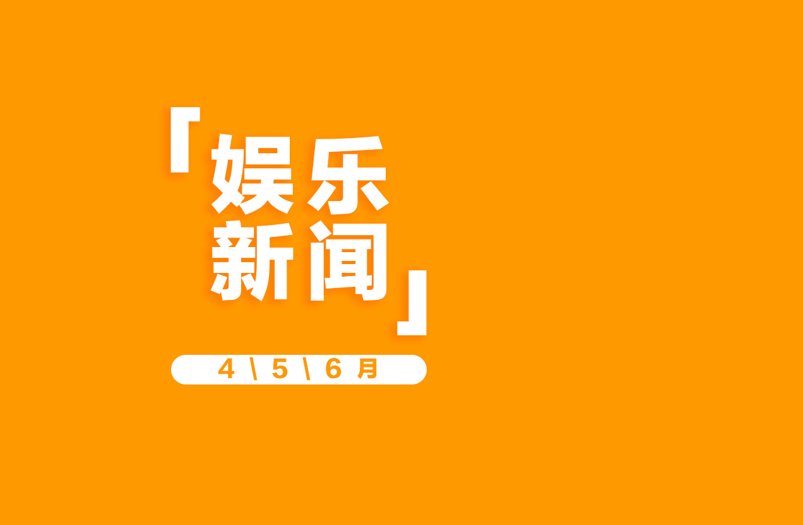
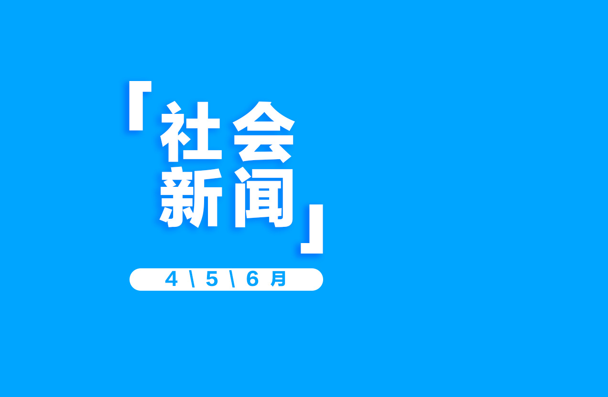
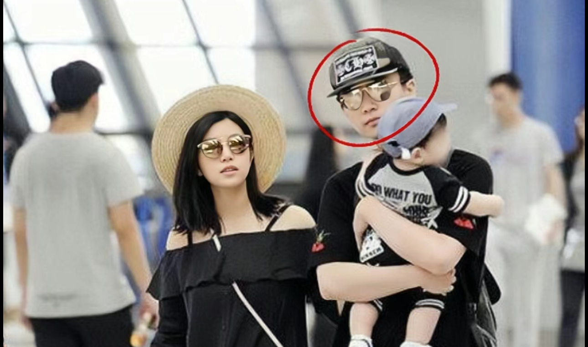

返回上一个页面



高考后大爆改计划
全面改变，开启人生的新篇章
时代峰峻旗下TF家族三代出道战于6月9日官宣团名叫初生
TF家族三代出道战于6月9日官宣，团名叫初生，粉丝名叫逆爹
中专女生拿下数学竞赛全球第12名
中江苏涟水17岁中专生姜萍获得阿里全球数学竞赛初赛第12名
陈晓疑似婚变
据说陈晓在2023年年底就跟陈妍希提出了离婚
黄一鸣说私生子是王思聪的
青春有你2选手黄一鸣承认未婚生女的孩子爸爸是王思聪